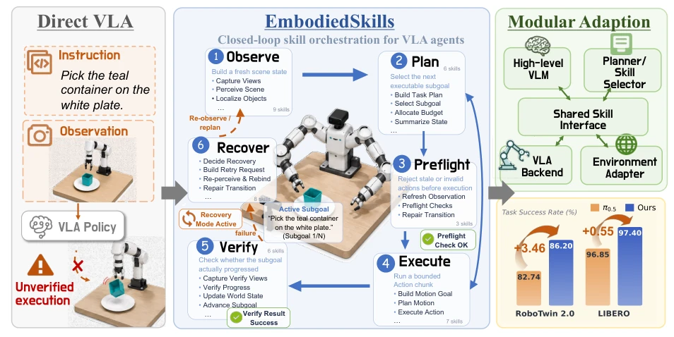
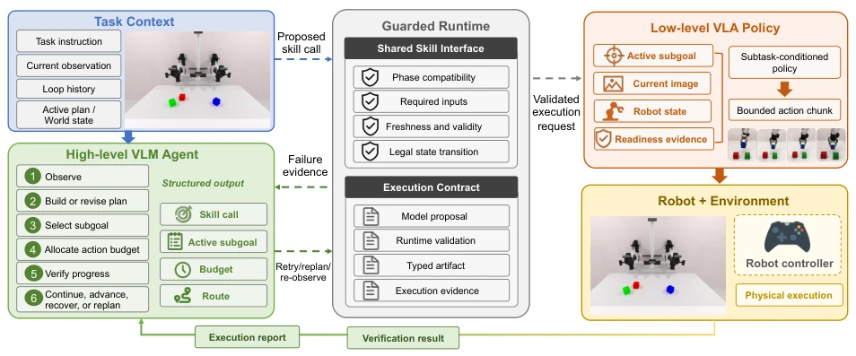
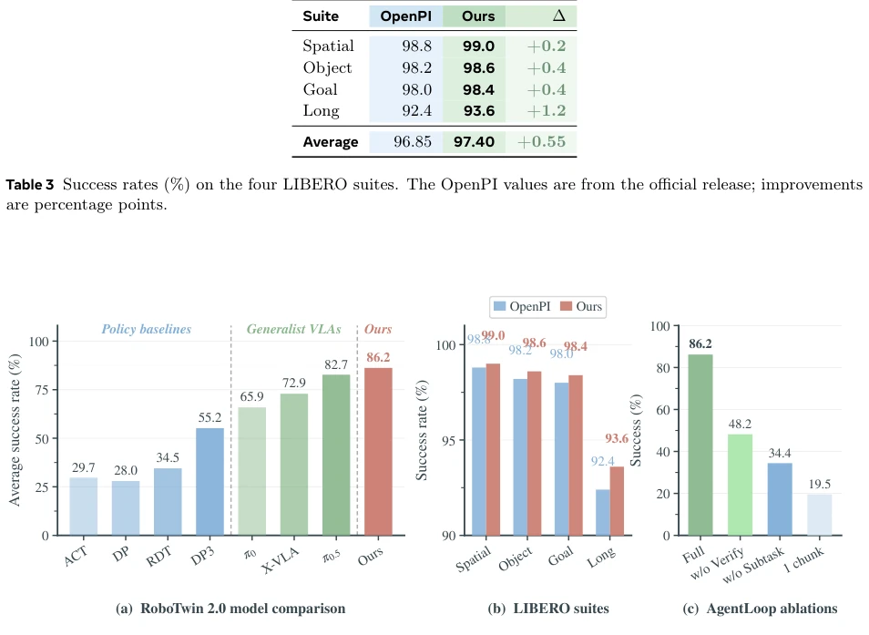
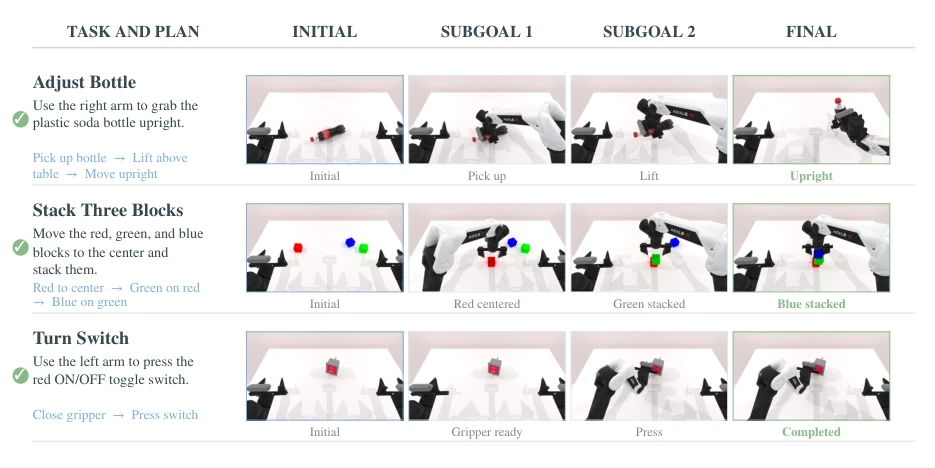
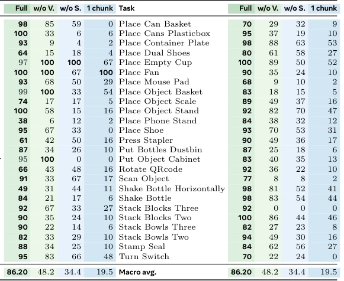

This paper equips VLA models with a "safety helmet". Current VLAs are like reckless racers, just stepping on the gas (generating actions), ignoring whether there is a cliff ahead (physical state verification). EmbodiedSkills integrates a "traffic cop" (Guarded Runtime) to check prerequisites before action execution and verify results after execution. Although this increases latency, it turns "black box" decisions into traceable trajectories. However, the maintenance cost of task adaptation strategies is a drawback, as fine-tuning a VLA for each task is less advantageous than a general-purpose model. Overall, this transforms "can run" into "can run reliably", suitable for scenarios with high safety requirements, but real-time performance may have to yield. It demonstrates that in embodied intelligence, architecture design sometimes determines success or failure more than the model itself.
Long horizon tasks are not merely predicting the next action, but also require perception, planning, verification, and recovery. Existing end-to-end VLA strategies, although unifying the vision-motor control interface, often have implicit intermediate task decisions [2, 4, 6, 7], making it difficult to locate whether the issue lies in perception, planning, or execution once failure occurs. Although LLM-based robot agents explicitly handle tool invocation and reasoning steps [10, 11], the proposed skill decisions may not be effective in the current physical state, potentially relying on outdated observations or failing to produce expected results. Especially in partially observable and contact-rich failure scenarios, relying solely on prompts cannot enforce execution constraints. Therefore, bridging model decisions with physical execution is needed to ensure proposed operations are checked before execution and results are verified after execution, thereby building a reliable closed-loop embodied system.
The core is the EmbodiedSkills framework, containing a six-stage AgentLoop: Observe (Observation), Plan (Planning), Preflight (Pre-flight Check), Execute (Execution), Verify (Verification), Recover (Recovery). The innovation lies in the "Executable Skill Contract", where each skill defines typed inputs/outputs, preconditions, and execution traces. The high-level VLM proposes structured skill decisions, while the low-level VLA generates bounded action chunks. The key mechanism is Guarded Runtime, which verifies stage compatibility, input freshness, and action validity before execution, and records feedback after execution. This strategy-runtime separation allows VLA strategies to be replaceable without changing the AgentLoop. Training adopts component-level supervision, allowing planners, verifiers, and VLA strategies to be adapted independently. Through shared interfaces, modular training and deployment of different components are achieved, supporting optional online strategy optimization.

Figure 1 Overview of EmbodiedSkills. EmbodiedSkills transforms a low-level VLA policy into a closed-loop embodied agent by coordinating observation, planning, validation, execution, verification, and recovery through executable skills. A high-level policy proposes structured operations, while a guarded runtime validates and executes them and records post-execution feedback as structured trajectories.

Figure 2 The high-level VLM decomposes the instruction, selects executable subgoals, and verifies progress from post- action observations. The low-level VLA policy executes each active subgoal as a bounded action chunk.
Evaluated on RoboTwin 2.0 (50 tasks) and LIBERO (4 suites). Baselines include π0.5, OpenPI, ACT, etc. On RoboTwin, the task adaptation strategy average success rate is 86.20%, outperforming π0.5's 82.74%. Reaching 97.40% on LIBERO, outperforming OpenPI's 96.85%. Ablation studies show that removing verification (w/o Verify) drops success rate sharply to 48.2%, removing subtask conditions (w/o Subtask) drops to 34.4%, proving intermediate verification and semantic subtask decomposition are crucial. Achieved 12.5% on RMBench memory-dependent tasks. Results indicate the framework significantly improves reliability for long horizon tasks, and the verification mechanism yields the greatest gain for complex contact tasks.

Figure 3 Cross-benchmark execution results. (a) Average success of representative policy baselines, generalist VLA baselines, and our task-adapted policies on the 50-task RoboTwin 2.0 benchmark. Vertical dashed lines separate method families. (b) OpenPI and our success rates on the four LIBERO suites. (c) Controlled AgentLoop ablations on the same RoboTwin 2.0 task set.

Figure 4 Three randomly selected successful execution examples on RoboTwin 2.0.
其他图片Other Figures

Figure 3(c) shows that the three mechanisms contribute at different levels. Preserving the full budget without verification recovers part of the Full configuration, but still loses 38.0 points. The execution budget required by a semantic subtask varies with the initial state and the realized motion, so a fixed open-loop allocation cannot adapt the number of chunks to observed progress: it may advance before the subtask is complete or continue executing after sufficient progress. Replacing the active subtask with the original task instruction increases the gap to 51.8 points: the low-level policy must infer both the current stage and the required motion from a long instruction at every chunk. The one-chunk result further shows that a semantic decomposition alone is not sufficient; many vali